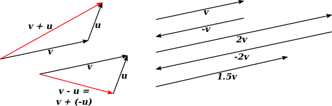
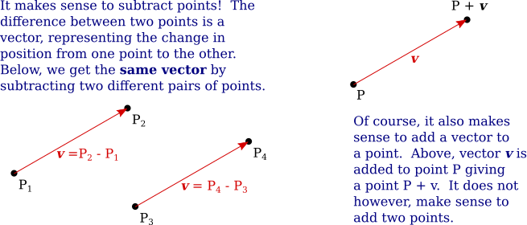
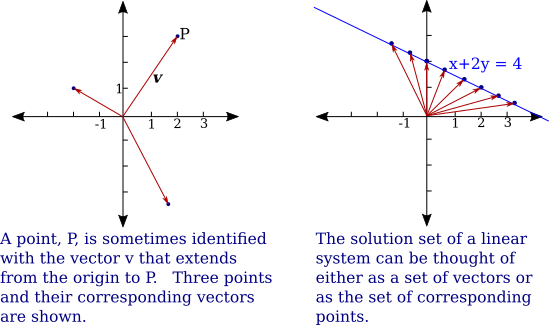
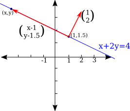

03 Vectors in $\R^n$
Some basic background information about vectors in $\R^n$ is covered in the textbook in Chapter 2, Sections II.1 and II.2. For us, a column vector of dimension $n$ is simply a column of $n$ numbers. (Alternatively, we could use row vectors; there is no essential difference for us at this point between the two notations.) It is important that two vectors can be added, as long as they have the same dimension, and a vector can be multiplied by a scalar, where a scalar is just a number:
$\begin{pmatrix} a_1\\ a_2\\ \vdots\\ a_n\end{pmatrix} + \begin{pmatrix} b_1\\ b_2\\ \vdots\\ b_n\end{pmatrix} = \begin{pmatrix} a_1+b_1\\ a_2+b_2\\ \vdots\\ a_n+b_n\end{pmatrix} \hskip 1 in r\cdot\begin{pmatrix} a_1\\ a_2\\ \vdots\\ a_n\end{pmatrix}= \begin{pmatrix} r a_1\\ r a_2\\ \vdots\\ r a_n\end{pmatrix}$
But vectors also have a geometric interpretation, and it's useful to know something about the geometry. It's easiest to think about the geometry in $\R^2$ or $\R^3$, but you need to imagine similar things going on in $n$-dimensional space in general. A vector in $\R^n$ is often drawn as an arrow, but only the length and direction of the arrow is relevant to the vector, not where the arrow is located. You should understand the geometric meaning of vector addition and scalar multiplication in terms of what they do to arrows.

A column of $n$ numbers can specify a point in $\R^n$ as well as a vector. This duality can be confusing. A point represents a position. A vector is perhaps best thought of as representing a displacement, or change in position. The displacement from one point to another can be thought of as the difference between two points, so it makes sense to subtract two points and get a vector as the answer.

Points and vectors are different things, but sometimes, confusingly, we treat them as being more or less the same. In particular, we sometimes make little distinction between a point $(a_1,a_2,\dots,a_n)$ and the column vector that has the same coordinates. One way to visualize that vector is as the arrow from the origin to the point. We have been saying that a solution to a system of linear equations is a vector, but it is often better to think of it as being the corresponding point. Consider the solutions to the linear equation $x+2y=4$. The solution set can be visualized either as a set of vectors or as a set of points in $\R^2$.

Later, we will generalize the ideas of vector, vector space, and dimension. In any vector space, vectors can be added and multiplied by scalars. In $\R^n$, we have some additional operations. Here are the most important facts.
The inner product or dot product of two $n$-dimensional vectors is defined by $$ \begin{pmatrix}a_1\\ a_2\\ \vdots\\ a_n\end{pmatrix} \cdot \begin{pmatrix}b_1\\ b_2\\ \vdots\\ b_n\end{pmatrix} = \sum_{i=1}^n a_ib_i = a_1b_1 + a_2b_2 + \cdots + a_nb_n$$ and the length of a vector $\vec v = \begin{pmatrix}a_1\\ a_2\\ \vdots\\ a_n\end{pmatrix}$ is given by $$|\vec v| = \sqrt{\vec v \cdot \vec v} = \sqrt{\sum_{i=1}^n a_i^2} =\sqrt{a_1^2+a_2^2+\cdots+a_n^2}$$ If $\vec v$ and $\vec u$ are two non-zero vectors in $\R^n$, then the angle, $\theta$, between $\vec v$ and $\vec u$ satisfies $$\cos(\theta)=\frac{\vec v \cdot \vec u}{|\vec v|\,|\vec u|}$$ and in particular, $\vec v$ and $\vec u$ are orthogonal (or perpendicular) if and only if $\vec v \cdot \vec u = 0$.
Look again at the linear equation $x+2y=4$ and its set of solutions in $\R^2$. The solution set is a line. In fact, that line is orthogonal to the vector $\vec n=\Big(\begin{smallmatrix}1\\2\end{smallmatrix}\Big)$, where the coordinates of $\vec n$ are the coefficients of the variables in the linear equation. Take some arbitrary fixed point on the line, say $P_o=(1,1.5)$. Now, look at any other point $P=(x,y)$ on the line, and consider the vector $P-P_o= \Big(\begin{smallmatrix}x-1\\y-1.5\end{smallmatrix}\Big)$. This vector is orthogonal to $\vec n$. The orthogonality is expressed by the equation $\vec n \cdot (P-P_o) = 0$, which in this case is $\Big(\begin{smallmatrix}x-1\\y-1.5\end{smallmatrix}\Big) \cdot \Big(\begin{smallmatrix}1\\2\end{smallmatrix}\Big)=0$, or $1(x-1) + 2(y-1.5)=0$. And that equation simplifies to the original equation, $x+2y=4$. $P_o$ could be any point on the line; you get the same simplified equation in the end.

More generally, given a non-zero vector $\vec n = \Big(\begin{smallmatrix}A\\B\end{smallmatrix}\Big)$ and a point $P_o= \Big(\begin{smallmatrix}x_o\\y_o\end{smallmatrix}\Big)$, the line through $P_o$ that is orthogonal to $\vec n$ has equation $\vec n\cdot(P-P_o)=0$. The equation can also be written $A(x-x_o)+B(y-y_o)=0$ or as $Ax+By=C$ where $C=Ax_o+By_o$.
This can be generalized to higher dimensions. In dimension 3, for example, the solutions of the equation $Ax+By+Cz=D$ form a plane that is orthogonal to the vector $\bigg(\begin{smallmatrix}A\\B\\C\end{smallmatrix}\bigg)$. If $(a,b,c)$ is a point on that plane, then the equation can also be written $A(x-a)+B(x-b)+C(x-c)=0$ or $\bigg(\begin{smallmatrix}A\\B\\C\end{smallmatrix}\bigg)\cdot \Bigg(\bigg(\begin{smallmatrix}x\\y\\z\end{smallmatrix}\bigg)- \bigg(\begin{smallmatrix}a\\b\\c\end{smallmatrix}\bigg)\Bigg) = 0.$